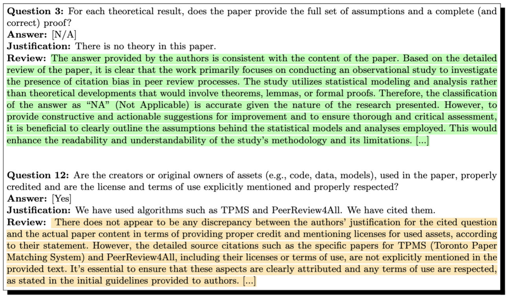
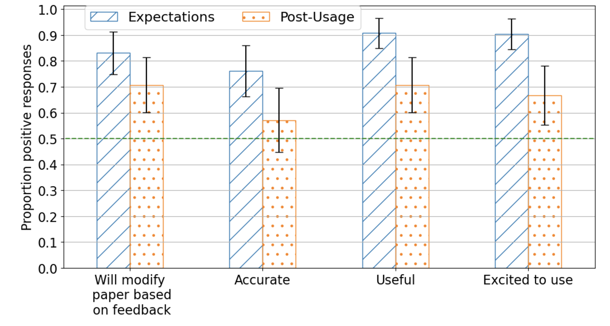
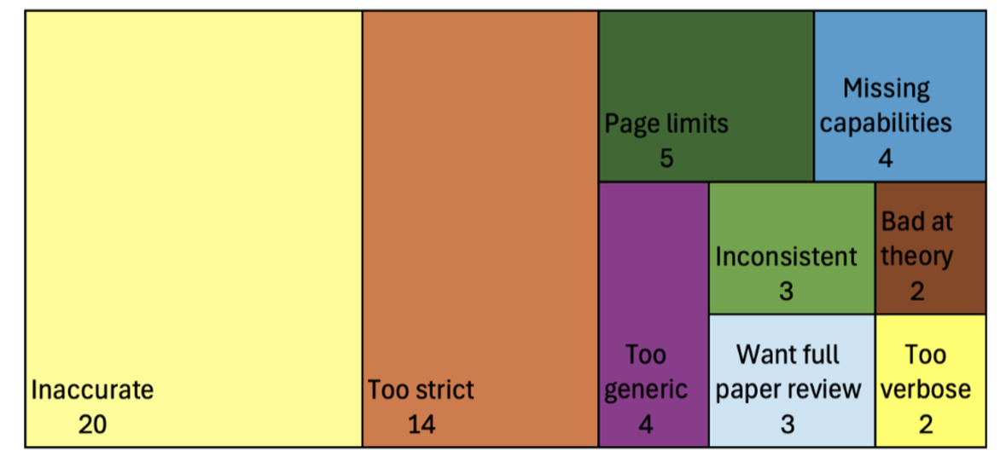
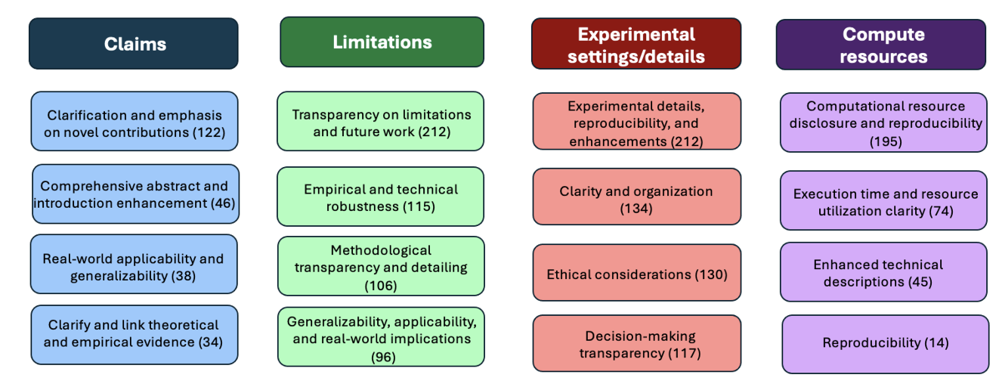
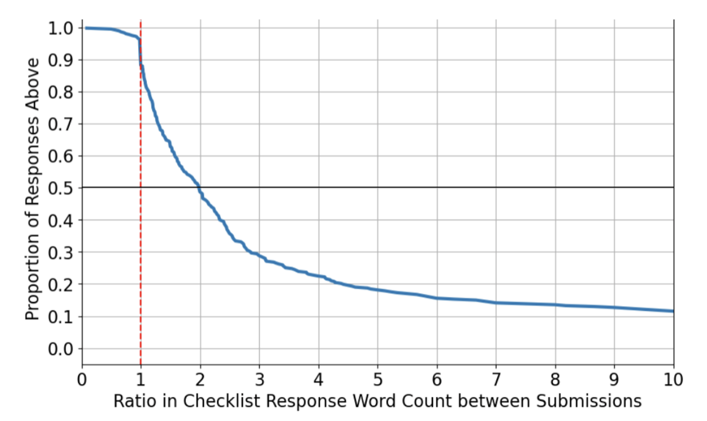
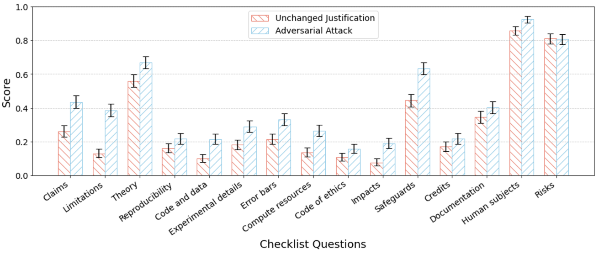

Usefulness of LLMs as an Author Checklist Assistant for Scientific Papers: NeurIPS'24 Experiment
Large language models (LLMs) represent a promising but controversial assistant in the process of preparing and reviewing scientific papers. They may serve as useful analytical tools to scrutinize manuscripts and identify possible weaknesses or inaccuracies that need addressing. However, the use of LLMs is fraught with issues of inaccuracy and bias — one pilot study that used GPT to judge the quality of paper abstracts found errors due to “a bias towards positive results, misinterpreting parameter ranges…[and] being swayed by bombastic language.” [1] Despite such risks, LLMs are already being used in the review of scientific papers [2,3]. Furthermore, the peer review process itself is increasingly under strain due to a rising tide of submissions in many fields, such as AI/ML and medicine [4]. This rise in submissions has led to an overtaxed reviewer pool, uneven quality of reviews, and many complaints from paper authors [5]. Given the fact that LLMs are already being widely adopted in the scientific peer review process, the pressing question becomes, “How can we harness LLMs responsibly and effectively to assist in the scientific peer review process?”
In an experiment at this year’s NeurIPS, a premier publication venue in AI / Machine Learning, we took an initial step towards answering this question. We evaluated a relatively clear-cut and low-risk use case: vetting paper submissions against submission standards, with results shown only to paper authors. We deployed an optional to use LLM-based “Checklist Assistant” to authors at NeurIPS 2024 as an assistant to check compliance with the NeurIPS Paper Checklist. The NeurIPS Paper Checklist is a series of yes/no questions that help authors check if their work meets reproducibility, transparency, and ethical research standards expected of scientific papers. The checklist is a critical component in maintaining standards of research presented at the conference. Adhering to the guidelines outlined by these checklists helps authors avoid mistakes that could lead to rejection during peer review.
We systematically evaluated the benefits and risks of an LLM Checklist Assistant focusing on two main questions:
(1) Do authors perceive an LLM Author Checklist Assistant as a valuable enhancement to the paper submission process?
(2) Does the use of an Author Checklist Assistant meaningfully help authors to improve their paper submissions?
The main takeaway is that an LLM Checklist Assistant can effectively aid authors in ensuring scientific rigor, but should likely not be used as a fully automated review tool that replaces human review.
Example of checklist questions, answers, and LLM-provided Review from the Checklist Assistant (review shown highlighted).
(1) Did authors find the Checklist Assistant useful?
We administered surveys both before and after use of the Checklist Assistant asking authors about their expectations for and perceptions of the tool. We received 539 responses to the pre-usage survey, 234 submissions to the Checklist Assistant and 78 responses to the post-usage survey.
Authors felt the Checklist Assistant was a valuable enhancement to the paper submission process. The majority of surveyed authors reported a positive experience using the LLM Checklist Assistant: >70% of authors found it useful and >70% said they would modify their paper in response to feedback.
Interestingly, authors’ expectations of the assistant’s effectiveness were even more positive before using it than their assessments after actually using it. Comparing pre- and post-usage responses, there was a statistically significant drop in positive feedback on the “Useful” and “Excited to Use” questions. 
Responses to survey questions before and after using checklist verification (n=63 unique responses.)
(2) What were the main issues authors had with the Checklist Assistant?
We also solicited freeform feedback on issues that the authors experienced using the Checklist Assistant, with responses grouped below.
Among the main issues reported by authors in qualitative feedback, the most frequently cited problems were inaccuracy (20/52 respondents) and that the LLM was too strict in its requirements (14/52 respondents).
Reported issues using checklist verification from freeform feedback on post-usage survey (n=52 out of 78 total survey responses.)
(3) What kinds of feedback did the Checklist Assistant provide?
We used another LLM to extract key points from the Checklist Assistant’s responses for each question on the paper checklist and to cluster these points into overarching categories. Below we show the most frequent categories of feedback given by the Author Checklist Assistant on four questions of the checklist:

Clustering of most common types of feedback given by the LLM Checklist Assistant on four checklist questions.
The LLM was able to give concrete feedback to authors grounded in the content of their paper and checklist. The LLM tended to provide 4-6 distinct and specific points of feedback per question across the 15 questions. While it tended to give some generic boilerplate as part of its responses and to expand the scope of questions, it also was capable of giving concrete and specific feedback for many questions.
(4) Did authors actually modify their submissions?
Authors reported in freeform survey responses reflect that they planned to make meaningful changes to their submissions—35/78 survey respondents provided specific modifications they would make to their submissions in response to the Checklist Assistant. This included improving justifications for checklist answers and adding more details to the paper about experiments, datasets, or compute resources.
In 40 instances, authors submitted their paper twice to the checklist verifier (accounting for 80 total paper submissions.) We find that of the 40 pairs of papers, in 22 instances authors changed at least one answer in their checklist (e.g., ‘NA’ to ‘Yes’) between the first and second submission and in 39 instances they changed at least one justification for a checklist answer. Of the authors who changed justifications on their paper checklist, many authors made a large number of changes, with 35/39 changing more than 6 justifications of the 15 questions on the checklist. While we cannot causally attribute these changes to the Checklist Assistant, they suggest that authors may have incorporated feedback from the assistant in between submissions.
Below, we show (multiplicative) increase in word count between initial submission and final submission on questions where authors changed justifications (a value of 2 corresponds to a doubling of the length of an answer). We find that over half the time when authors changed a checklist answer, they more than doubled the length of their justification.
Change in word count of authors’ checklist responses between first and second submission to the Checklist Assistant. Over half the time, authors more than doubled the length of their checklist response.
In summary:
When authors submitted to the Checklist Assistant multiple times they almost always made changes to their checklists between submissions and significantly lengthened their answers, suggesting that they may have added content in response to LLM feedback.
(5) Can the Checklist Assistant be gamed?
The intended use of our Checklist Assistant was to help authors improve their papers, not to serve as a tool for reviewers to verify the accuracy of authors’ responses. If the system were used as an automated verification step as part of a review process, this could introduce an incentive for authors to “game” the system motivating the following question: could authors automatically improve the evaluations of their checklist responses with the help of AI, without making actual changes to their paper? If such gaming were possible, authors could provide a false impression of compliance to a conference without (much) additional effort and without actually improving their papers.
To assess whether our system is vulnerable to such gaming, we employed another LLM as an attack agent to iteratively manipulate the checklist justifications, aiming to deceive the Checklist Assistant. In this iterative process, the attack agent receives feedback from the system after each round and uses it to refine its justifications. We provided GPT-4o with the initial checklist responses and instructed it to revise the justifications based solely on feedback, without altering the underlying content of the paper. In particular, the attack agent outputs a modified paper checklist and we re-submitted the original paper with the modified checklist to our Checklist Assistant. We allowed the attack agent to do this for three iterations (reflecting the submission limit on our deployed assistant), with the agent selecting the highest scored response for each checklist question over the iterations.
To statistically quantify how attack success we submitted the selected justification to our Checklist Assistant for an evaluation “Score” (1 when the Checklist Assistant said the checklist question had “No Issues” and 0 when the Assistant identified issues.) Below we show the results of this attack:
Authors could adversarially improve their chance of passing an automated LLM Checklist review by modifying their checklist without modifying their paper: on 14 out of 15 questions our simple adversarial attack shows a score increase when comparing the unchanged justifications with those refined through three iterations of automated improvement.
In a manual examination of the changes made by the (attacker) LLM to the justifications, we found that the attacker LLM employed several illegitimate strategies, such as adding a hardware description that was not present in the paper or original justifications and generating a placeholder URL as a purported repository for the code. These illegitimate justifications were evaluated as adequate by the Checklist Assistant.
Conclusions
Our deployment of an LLM-based paper Checklist Assistant at NeurIPS 2024 demonstrated that LLMs hold potential in enhancing the quality of scientific submissions by assisting authors in validating whether their papers meet submission standards. However, there were still notable limitations in deploying LLMs within the scientific peer review process that need to be addressed, in particular accuracy and alignment issues. Further, our system was not robust to gaming by authors, suggesting that while a Checklist Assistant could be useful as an aid to authors it may be a poor substitute for human review.
For more details, see the full paper: https://arxiv.org/pdf/2411.03417.
This blog post is based on joint work with Ihsan Ullah, Thanh Gia Hieu Khuong, Benedictus Kent Rachmat, Zhen Xu, Isabelle Guyon, and Nihar B. Shah.
[1] Liu and Shah, ReviewerGPT? An Exploratory Study on Using Large Language Models for Paper Reviewing, 2023. https://arxiv.org/pdf/2306.00622
[2] Liang et al., Monitoring AI-Modified Content at Scale: A Case Study on the Impact of ChatGPT on AI Conference Peer Reviews, 2024. https://proceedings.mlr.press/v235/liang24b.html
[3] Latona et al., The AI Review Lottery: Widespread AI-Assisted Peer Reviews Boost Paper Scores and Acceptance Rates, 2024. https://arxiv.org/abs/2405.02150
[4] Landhuis, E, Scientific literature: Information overload. Nature, 2016. https://www.nature.com/articles/nj7612-457a
[5] Shah, N, An Overview of Challenges, Experiments, and Computational Solutions in Peer Review, 2024. https://www.cs.cmu.edu/~nihars/preprints/SurveyPeerReview.pdf